CLAUDE’S PICK
Helix Foundry — 로컬 기반 데이터 워크스페이스
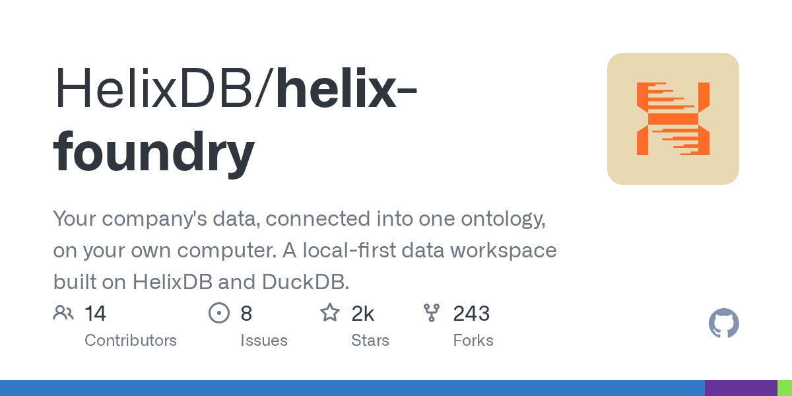
기업 데이터가 여러 소스에 산재되어 통합 분석이 어려운 문제를 해결하는 로컬 우선 데이터 워크스페이스. HelixDB의 그래프 데이터베이스와 DuckDB의 분석 엔진을 결합하여 사용자의 컴퓨터에서 실행되며, 데이터베이스, Stripe, PostHog 등 기존 도구를 연결하고 통일된 온톨로지로 데이터를 탐색하고 질의할 수 있다. 계정 없이 로컬에서만 실행되며 기본적으로 AI가 로컬에서 동작한다.
핵심 포인트: 핵심 기여: Docker 기반 자동화된 설치로 GPU 가속 AI 모델을 포함한 전체 스택을 로컬 머신에서 즉시 실행 가능하며, 그래프 데이터베이스의 벡터 검색과 전문 검색을 단일 시스템에 통합하여 엔터프라이즈 데이터 통합의 복잡성을 단순화한다.
🔗 github.com/HelixDB/helix-foundry
기타 (Others)
TypeSafe AI — 시스템 요청에서 이미지 활용하기
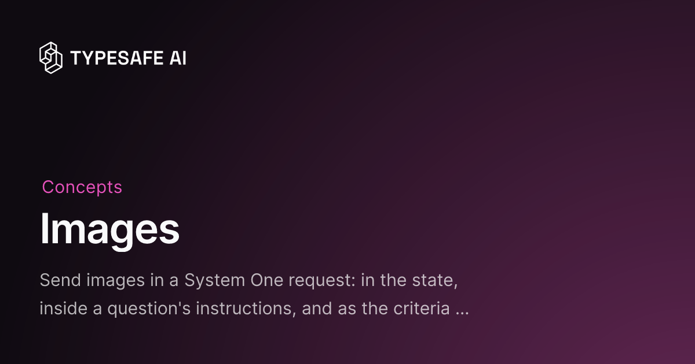
TypeSafe AI의 이미지 기능을 활용할 때 시스템 상태, 질문 지시사항, 평가 기준 등 다양한 위치에 이미지를 포함시킬 수 있다. 이미지와 Box 질문은 현재 드리머 레디 단계이며 프로토타입 구축과 아이디어 실험을 위해 제공된다. TypeSafe-Danger-Zone-Images 헤더를 포함하여 활성화한 후 요청 본문에 이미지를 참조하면 모든 질문 유형에서 이미지를 활용할 수 있다.
핵심 포인트: 핵심 기여: 모든 질문 유형에서 이미지 활용 가능하며 Box 질문 유형은 이미지 내 객체 위치 반환 기능을 제공한다. 현재 드리머 레디 단계로 요청 형식과 정확도가 향후 업데이트될 수 있다.
기타 (Others)
WRRF — 하이브리드 검색에서 최적 융합 가중치는 점이 아닌 구간
하이브리드 정보 검색에서 널리 사용되는 RRF(Reciprocal Rank Fusion)는 쿼리에 관계없이 각 검색기에 균등한 고정 가중치를 할당하는 한계가 있다. 본 연구는 동적 융합 가중치 예측 전략 8가지를 4개 데이터셋과 4개 검색기 조합으로 평가한 결과, 쿼리별 최적 융합 가중치가 단일 값이 아닌 구간 형태임을 발견했다. 128개 동적 융합 방법 중 74개가 표준 RRF보다 유의미하게 우수했으며, 지연 시간과 성능을 고려한 의사결정 프레임워크를 제시한다.
핵심 포인트: 핵심 기여: 쿼리별 최적 융합 가중치가 단일 점이 아닌 다양한 형태의 구간임을 실증 연구로 입증했으며, 128개 방법 중 74개(58%)가 표준 RRF를 초과 성능했고, 실무 제약 조건에 따라 최적 융합 방법을 선택하는 계층적 의사결정 프레임워크를 제공한다.
논문 (Papers)
AI & RESEARCH
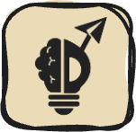
RCER: 반복형 RAG를 위한 교차 증거 관계 재구성
반복형 검색 증강 생성(RAG)에서 새로운 정보가 나타날 때 검색된 여러 문서 간의 개체 대응과 추론 의존성을 재구성하기 어려운 문제를 해결한다. RCER은 누적된 원본 문서로부터 교차 증거 관계를 직접 재구성하며, 라운드 간 관계 증거 수집, 추론 맥락 재구성, 교차 증거 합성 추론의 세 단계로 동적 문제 분해와 반복 검색을 수행한다. 세 개의 다중 홉 질의응답 벤치마크에서 평균 2.83 EM, 3.06 F1 포인트의 성능 향상을 달성했다.
핵심 포인트: 핵심 성과: 세 개의 다중 홉 질의응답 벤치마크에서 기존 최고 성능 방법 대비 평균 2.83 EM 및 3.06 F1 포인트 향상을 달성하며, 특히 내러티브 및 암묵적 추론 작업에서 우수한 성능 입증.
논문 (Papers)
vLLM vs SGLang — PagedAttention과 RadixAttention 비교 및 선택 가이드
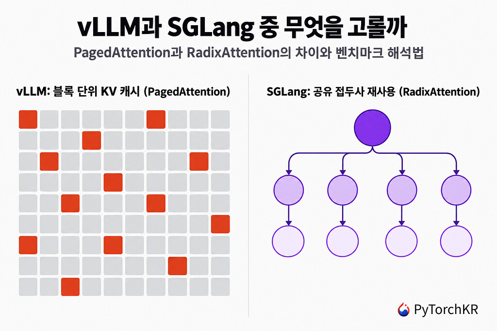
LLM 추론 엔진인 vLLM과 SGLang은 모두 KV 캐시 최적화 문제에서 출발했으나 다른 접근 방식을 채택했다. vLLM은 메모리를 블록으로 나누는 PagedAttention을 사용하고, SGLang은 공유 접두사를 트리 구조로 재사용하는 RadixAttention을 사용한다. 현재는 연속 배칭, 접두사 캐싱, 투기적 디코딩, 양자화 등 주요 기능이 상당 부분 겹치며, Red Hat의 벤치마크에 따르면 대부분의 워크로드에서 처리량이 유사하나 긴 코드 생성에서 SGLang이 약 22% 우수하다. 선택은 워크로드, 하드웨어, 생태계 특성에 따라 결정해야 한다.
핵심 포인트: 핵심 기여: 두 엔진의 근본적 아키텍처 차이(PagedAttention vs RadixAttention)를 명확히 비교하고, 2025년 H100 벤치마크 기반 선택 가이드 제시. SGLang의 RadixAttention과 Speculative Decoding 조합은 TTFT를 2.4초에서 180ms로 단축하고 월 API 비용을 85% 절감 가능.
🔗 discuss.pytorch.kr/t/vllm-sglang-red-hat…
기타 (Others)
Liquid AI d1-ultra — 복잡한 의사결정을 위한 멀티모달 AI 모델
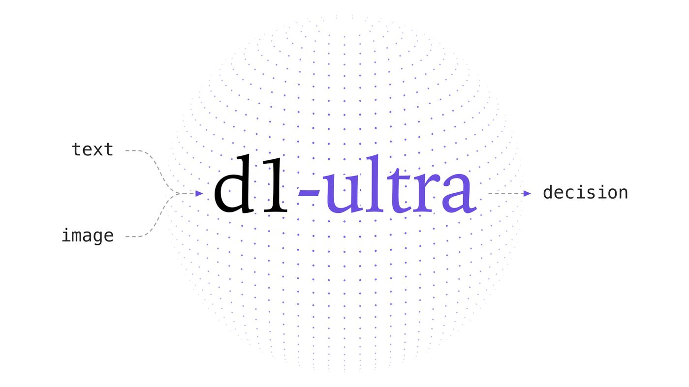
기존 의사결정 모델은 단순하고 명확한 작업에만 효과적이었던 문제를 해결하기 위해 Liquid AI가 d1-ultra를 공개했다. 이미지와 텍스트를 이해하고 44개 언어를 지원하며, 판단 결과의 신뢰도를 확률로 함께 제공하는 특징을 가지고 있다. 상품 사진과 설명의 일치 확인, 보험 청구 사진의 손상 판단 등 실무적 의사결정에 활용 가능하며, Decision Index v1.0에서 65점으로 1위를 차지했다.
핵심 포인트: 핵심 성과: Artificial Analysis Decision Index v1.0에서 65점으로 1위 기록, d1 대비 환각 감소율 85% 달성(기존 2% 대비), 입력 토큰당 0.042달러로 실제 운영 비용 최소화.
기타 (Others)
Jev 1.14: 이미지 입력과 확장 컨텍스트를 지원하는 AI 모델
TypeSafe AI가 공개한 Jev 1.14는 기존 텍스트 기반 모델에서 이미지 입력 및 물체 위치 감지 기능을 추가했다. 텍스트와 이미지를 자유롭게 조합할 수 있으며, 처리 가능한 컨텍스트 길이를 4배 확장했고 다국어 처리 성능도 개선했다. 다만 이미지 처리와 확장 컨텍스트는 실험 단계의 Danger Zone 기능으로 분류되어 프로토타입 개발용으로 권장되며, 프로덕션 환경 적용 시 주의가 필요하다.
핵심 포인트: 핵심 성과: 컨텍스트 길이 4배 확장, 이미지-텍스트 멀티모달 입력 지원, 다국어 처리 성능 개선. Danger Zone API 헤더를 통해 실험적 기능을 선택적으로 활성화할 수 있는 구조로 신뢰성과 창의성의 균형을 제공한다.
기타 (Others)
DEVTOOLS & OPEN SOURCE
PentAGI: 자율형 AI 에이전트 침투테스트 시스템
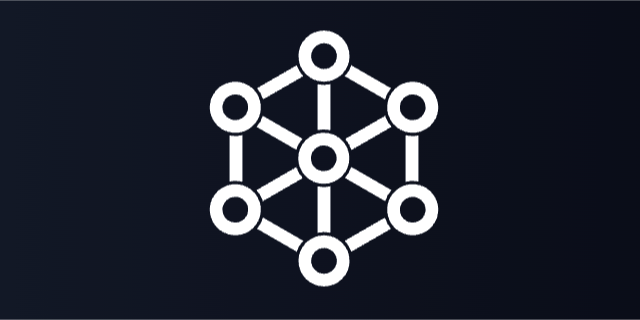
복잡한 침투 테스트 작업을 수행할 때 수동 개입이 많이 필요한 문제를 해결하기 위해 개발된 완전 자율형 AI 에이전트 시스템. PentAGI는 보안 전문가의 개입 없이 독립적으로 침투테스트 작업을 수행할 수 있으며, 복잡한 공격 시나리오를 자동으로 계획하고 실행하는 능력을 갖추고 있다.
핵심 포인트: 핵심 기여: 엔드투엔드 자율형 침투테스트 자동화 시스템으로, 보안 전문가의 개입 최소화와 복잡한 보안 평가 작업의 효율성 향상을 실현했다.
🔗 github.com/vxcontrol/pentagi
기타 (Others)
OSS Scanner — 앤트로픽의 AI 기반 오픈소스 보안 점검 서비스
오픈소스 프로젝트의 보안 취약점 발견이 수동 검토로 인해 지연되는 문제를 해결하기 위해 앤트로픽이 OSS Scanner를 공개했다. 자체 강력한 AI 모델로 주요 오픈소스 저장소를 정기적으로 스캔하고 취약점 재현 방법과 수정 코드까지 제공하는 무료 서비스다. 초기 검사에서 심각한 취약점 77건과 고위험 취약점 803건을 발견했으며, curl 등 널리 사용되는 프로젝트의 실제 취약점 수정도 완료했다.
핵심 포인트: 핵심 성과: 초기 스캔 결과 심각 취약점 77건, 고위험 취약점 803건을 발견하여 개발자에게 보고했으며, curl 등 주요 오픈소스 프로젝트에서 보안 취약점을 실제로 수정하게 함.
🔗 red.anthropic.com/oss-scanner/
기타 (Others)
Superlite: Claude Code 플러그인으로 AI 코딩 52% 단축
AI 코딩 에이전트가 계획 없이 진행되다가 뒤엎어지는 문제를 해결하기 위해 Superpowers 기반의 Superlite 플러그인을 개발했다. 명세를 넘기면 계획부터 병렬 구현, 테스트, 리뷰까지 자동으로 진행되며, 반복 승인을 제거하고 독립 작업을 병렬 실행하도록 설계했다. Opus가 조율과 최종 리뷰를, Sonnet이 주된 구현을 담당하여 이전 방식 대비 실행 시간을 52% 단축했다.
핵심 포인트: 핵심 성과: 비공개 테스트 177개를 모두 통과하며 16.1분 완료로 Superpowers 기본 구성 대비 52% 실행 시간 단축. 사람의 계획 일괄 승인 또는 AI 자율 결정 방식 선택 가능하며, 병렬 작업 실행으로 순차 구조의 병목 제거.
🔗 threads.com/@geeknewshada/post/DesrmJ1AdW…
기타 (Others)
Harness² — 모델 재학습 없이 에이전트 성능을 최적화하는 구글의 오픈소스 프레임워크
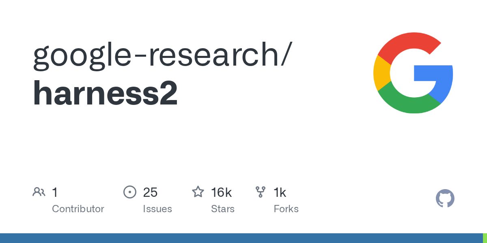
거대 모델을 재학습시키는 데 막대한 비용이 드는 문제를 해결하기 위해 구글이 공개한 프레임워크. Harness²는 모델 가중치를 고정한 채 프롬프트, 도구, 메모리 등 실행 환경만 자동으로 최적화한다. 대조 검증을 통해 정답 없는 개방형 환경에서도 행동 비교로 최선의 하네스를 찾아내며, 실무 벤치마크에서 단 1회 개선으로 최대 11.5점 성능 향상을 달성했다.
핵심 포인트: 핵심 성과: 단 1회 Harness² 단계 개선만으로 GLM-5와 Gemini 3.5의 성능을 최대 11.5점 향상시켰으며, 모델 재학습 없이 프롬프트·도구·메모리 최적화를 통해 에이전트 성능을 퀀텀 점프시킨다.
🔗 github.com/google-research/harness2
GitHub
Colorfigures: AI로 만드는 대화형 입체 학습 도구
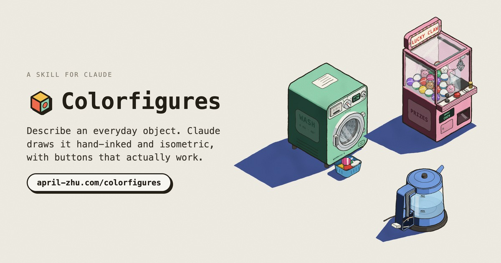
아이들의 학습 과정에서 복잡한 제품 작동 원리를 텍스트로만 설명하는 것이 한계였다. Colorfigures는 일상 물건에 대한 간단한 설명으로 Claude AI가 손으로 그은 듯한 입체 그림을 자동 생성하며, 사용자가 직접 클릭하고 상호작용할 수 있는 대화형 학습 도구를 제공한다. April Zhu가 개발한 이 스킬은 오픈소스로 무료 공개되었으며 Claude Code에 간단히 설치하여 사용할 수 있다.
핵심 포인트: 핵심 성과: 1분 내 3단계로 설치 완료 가능하며, 단순 텍스트 프롬프트만으로 상호작용 가능한 아이소메트릭 시각화 생성. 오픈소스 무료 공개로 누구나 복잡한 제품 설명을 시각 기반 교육 자료로 변환 가능.
기타 (Others)
REA: AI 에이전트로 모든 앱을 리버스 엔지니어링하기
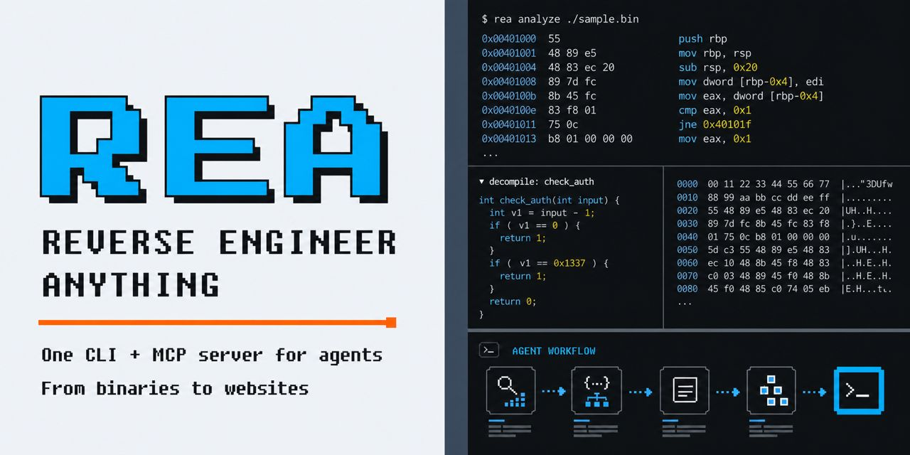
사용자가 원하는 앱의 기능을 자연어로 설명하면 AI 에이전트가 자동으로 해당 기능을 구현해주는 도구. 초기에는 성능이 제한적이지만 반복 개선을 통해 개발자 커뮤니티에서 큰 인기를 얻고 있으며, 공개 후 1주일 만에 깃허브 스타가 8.8만에서 20만 이상으로 급증했다. 라이선스 확인 후 직접 필요한 기능을 구현할 수 있게 해준다.
핵심 포인트: 핵심 성과: 공개 후 약 1주일 사이에 깃허브 스타 20만 개 이상 추가 달성, 개발자 커뮤니티에서 폭발적 관심 증명. 핵심 기능: 앱 동작을 분석해 네이티브 바이너리까지 리버스 엔지니어링 가능.
GitHub
OpenRouter Armor — AI 에이전트 도구 사용 검사 안전 분류기
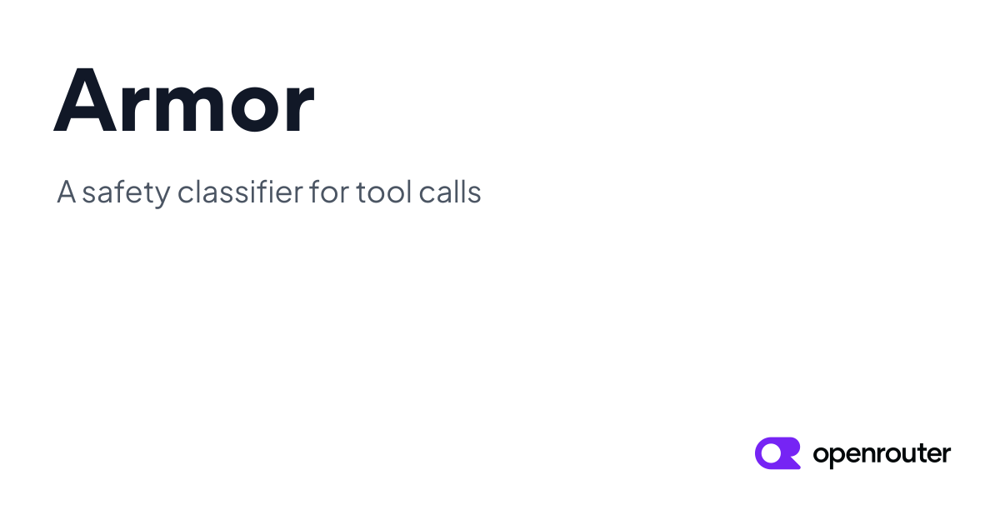
AI 에이전트가 파일 수정이나 외부 서비스 호출 같은 위험한 작업을 실행하기 전에 허용 범위를 검증할 방법이 없어 보안 위협이 발생한다. OpenRouter Armor는 모델과 애플리케이션 사이에서 모든 도구 호출을 검사하는 안전 분류기로, 평문 영어 규칙으로 허용/금지 동작을 정의하고 위반 시 호출을 즉시 차단한다. TypeSafe AI의 Jev 모델을 활용하며 Claude Code의 자동 분류기보다 높은 성능을 더 낮은 비용으로 제공한다.
핵심 포인트: 핵심 성과: Claude Code 자동 분류기 대비 높은 성능을 더 낮은 비용으로 제공하며, 평문 영어 규칙 정의를 통해 에이전트가 실제 작업 수행 전 위험한 명령을 사전에 걸러낸다.
🔗 openrouter.ai/docs/guides/features/plugin…
기타 (Others)
Claude Platform — OpenTelemetry 기반 에이전트 실행 추적 기능 공개
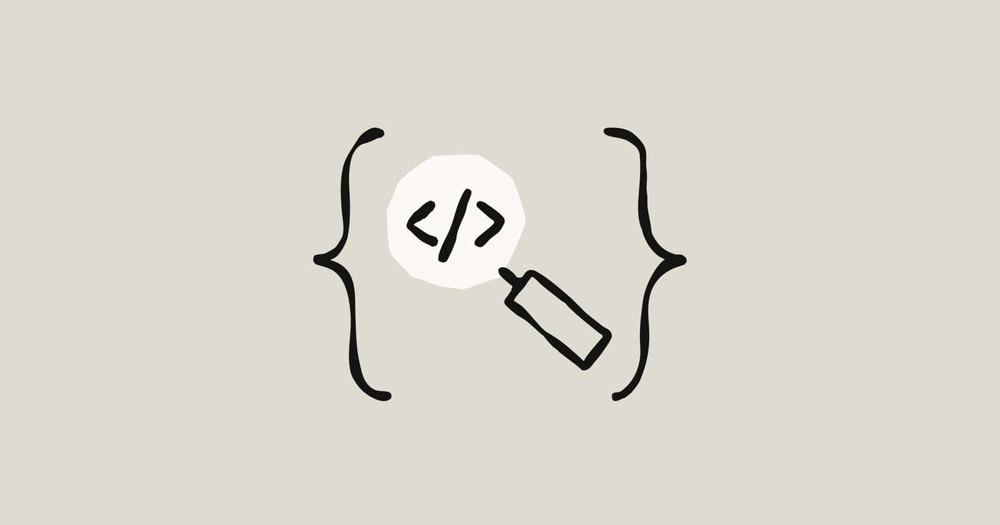
Claude 에이전트 개발 시 모델 호출, 도구 사용, MCP 서버 호출 등의 실행 과정을 추적하기 어려운 문제를 해결하기 위해 Anthropic이 OpenTelemetry 기반 트레이싱 기능을 출시했다. Claude Console에서 모니터링 대상을 지정하면 Langfuse, LangSmith, Sentry, Datadog 등 기존 옵저버빌리티 도구로 에이전트의 각 단계별 실행 기록이 자동 전송되며, 코드 수정 없이 지연시간, 토큰 사용량, 추적 ID 등 상세 정보를 확인할 수 있다.
핵심 포인트: 핵심 성과: Claude Managed Agents, Messages API, Claude SDKs에서 표준 OpenTelemetry 트레이스를 생성하며, Claude Console 설정만으로 모든 주요 모니터링 플랫폼과 통합 가능. 에이전트 신뢰성 검증 후 점진적으로 접근 권한 확대 시 실시간 실행 추적으로 안정성을 보장한다.
🔗 claude.com/resources/articles/agent-obser…
기타 (Others)
PRODUCT & INDUSTRY
PyMuPDF Pro — CPU 기반 문서 파싱으로 RAG 인프라 비용 대폭 절감
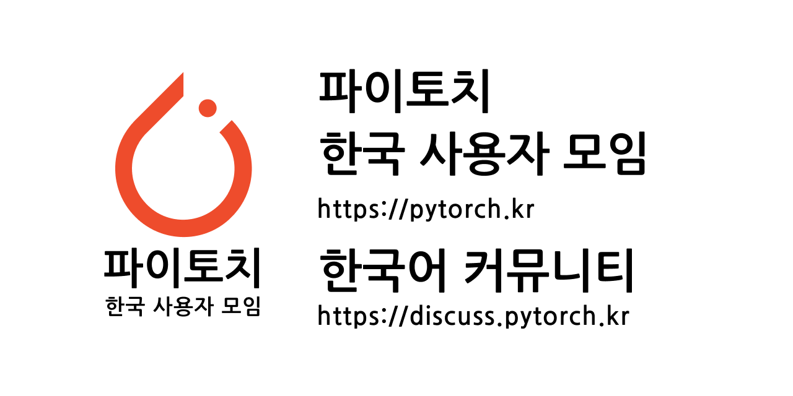
RAG 파이프라인 구축 시 VLM 기반 문서 파서는 고가의 GPU와 막대한 API 비용이 필요하다는 문제를 해결하기 위해 PyMuPDF Pro는 파일 내부 구조를 직접 읽는 CPU 기반 파싱 방식을 제시한다. 텍스트 레이어가 있는 일반 디지털 문서(PDF, HWP, Office)에 최적화되어 있으며, 300MB 미만의 메모리만으로 동작하므로 기존 서버에 함께 설치 가능하다. 300인 규모 기업의 연 200만 페이지 처리 기준 비용을 GPU 파서 4,350만 원에서 6,400원으로 단축할 수 있다.
핵심 포인트: 핵심 성과: 상용 VLM API 대비 7억 원대 비용 절감, 처리 시간 1년 11개월에서 수일 단축, HWP 지원 및 Reading Order 복원으로 다단계 레이아웃 정확도 확보.
🔗 discuss.pytorch.kr/t/vlm-cpu-rag-feat-pym…
기타 (Others)
Anthropic — 2021년 공개된 내부 로드맵, Claude의 전략적 설계 계획 드러나
Anthropic이 2021년 7월 작성한 내부 연구 로드맵이 저작권 소송 증거로 공개되었다. ChatGPT 출시 1년 4개월 전 문서에는 소프트웨어 엔지니어 수준의 AI 개발, 도구 사용 강화학습, 코드 샌드박스 실행 위험 관리, GPU/TPU 확보 계획 등 현재 Claude의 모든 핵심 기능과 전략이 이미 상세히 기획되어 있었다. 이는 Anthropic이 장기적 기술 로드맵을 사전에 정밀하게 설계했음을 보여준다.
핵심 포인트: 핵심 기여: ChatGPT 출시 전 1년 4개월 시점에서 작성된 문서가 현재의 Claude 기능을 거의 정확히 예측했으며, 공동창립자 Dario Amodei, Tom Brown 등 핵심 인물들의 실시간 협업 기록(7월 16일 오후 5시 28분~40분 사이 24개 댓글)이 회사의 전략적 의사결정 과정을 증명한다.
🔗 i.smitop.com/concise-research-roadmap.pdf
기타 (Others)